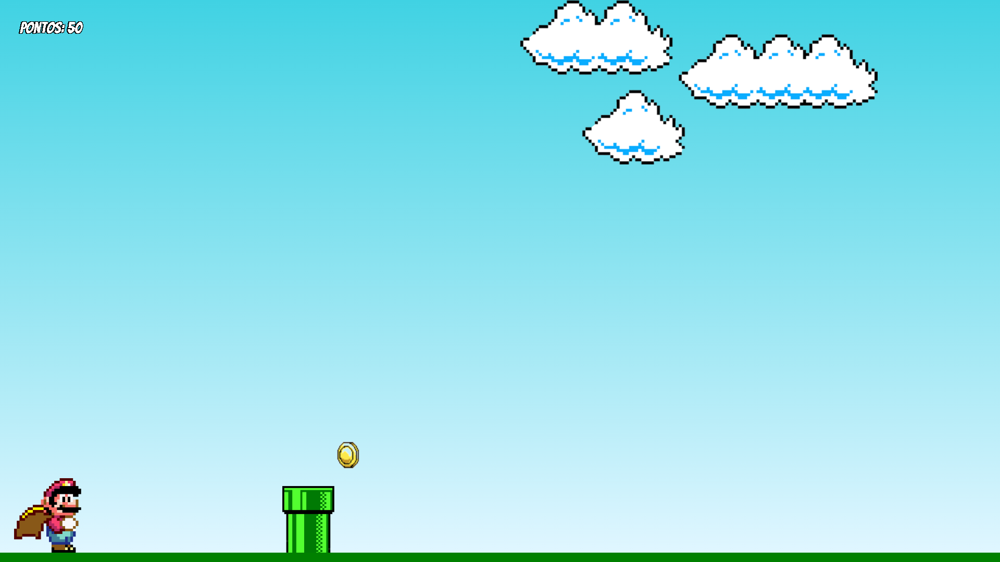

Programação em Jogos Digitais
ECIT Valdemiro Wanderley de Oliveira
Formação com foco em lógica, criação de jogos digitais e desenvolvimento de projetos interativos.
DESENVOLVIMENTO · TECNOLOGIA · APRENDIZADO
Estudante de Informática e desenvolvedor em formação. Gosto de transformar desafios em soluções digitais funcionais, com atenção aos detalhes e vontade constante de aprender.
Converse pelo WhatsApp01 const developer = {02 focus: 'experiências',03 learning: [04 'web', 'mobile',05 'novas ideias'06 ],07 status: 'em evolução'08 };09 build(withPurpose);01 / SOBRE
Minha trajetória combina a base criativa da programação de jogos com a formação técnica em Informática. Em cada projeto, busco praticar, experimentar e construir soluções que façam sentido para quem usa.
02 / TRAJETÓRIA
Uma base em desenvolvimento de jogos e uma formação técnica em andamento.
ECIT Valdemiro Wanderley de Oliveira
Formação com foco em lógica, criação de jogos digitais e desenvolvimento de projetos interativos.
IFSertão
Atualmente cursando Informática, ampliando conhecimentos na área de tecnologia.
03 / SELEÇÃO
Experimentos e soluções desenvolvidos durante minha jornada de aprendizado.

Projeto criado durante o curso de Programação em Jogos Digitais, inspirado em um tutorial do canal Manual Dev. A versão foi ampliada com tela de início, música, pontuação e coleta de moedas.

Aplicativo Android desenvolvido com React para apoiar o controle financeiro pessoal, reunindo em um só lugar o acompanhamento das finanças.

Painel responsivo e hospedado para gerenciamento de dados da loja. Permite cadastrar e editar registros, que ficam salvos em banco de dados.
VAMOS CONVERSAR?
Estou aberto a aprender, colaborar e conhecer novos desafios na área de tecnologia.